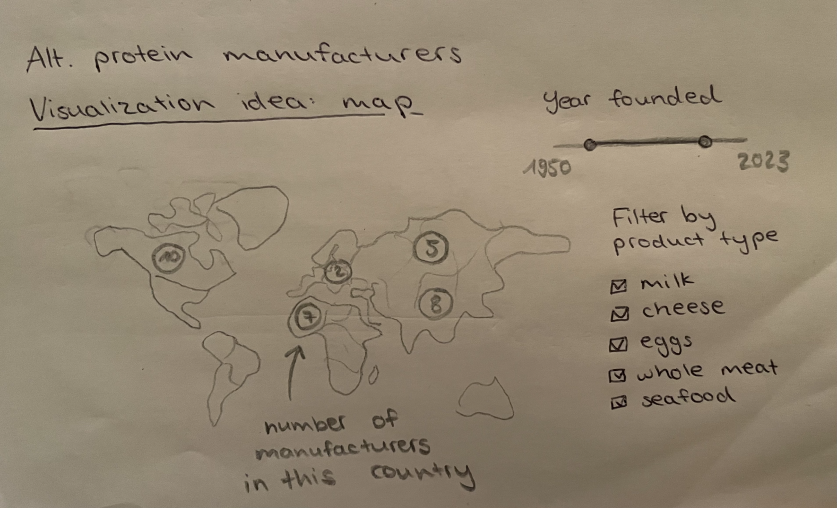
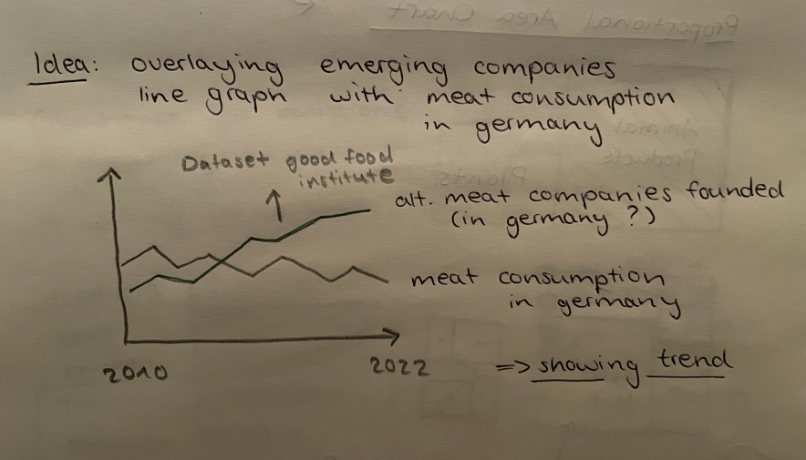
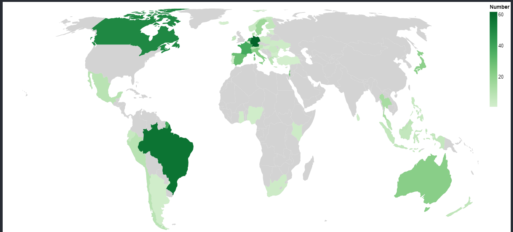
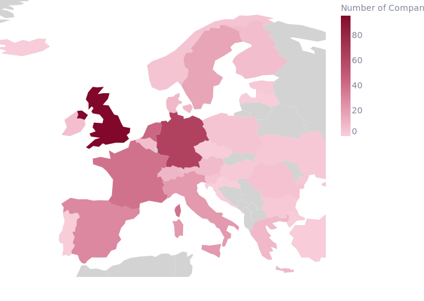
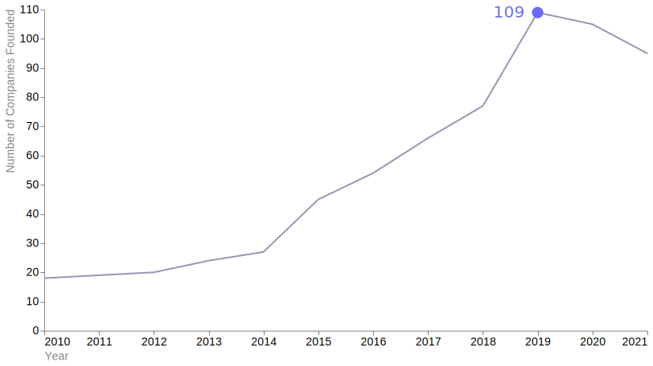

4 Alt-Protein Companies
Source: The Good Food Institute
This website provides a data set with companies producing ingredients or equipment for alternative protein products.
üîó To the dataset
4.1 Explorative Data Analysis
Interesting metrics in the data set for the storyline:
- company focus (e.g. meat, dairy alternative)
- Country/ region
- Year founded
Possible insights:
- growth in recent years (e.g. after 2010)
- there are a lot of companys providing alternatives
- maybe comparing countries?
- indicating/ fitering by product type
- (There are Logos in the database, could be cool to use?)
- the distribution of companies across the globe
Also: In the data set, there is “cultivated meat” under the category “protein category”.
→ filter to only “plant-based”
Lastly, this data set is updated per request. This could be dangerous, because there is no transparent way to see when the data set was updated last and (I am fairly sure) there is no claim to completeness.
4.2 First Visualization ideas
4.2.1 Map Chart

4.2.2 Line Chart

Idea: compare the falling meat consumption with the (hopefully) rising emerging alt-protein companies
4.3 Map Chart to show distribution
Implementation:
- Grouping the data set by the Country/ Region column
df_country = df.groupby('Country/Region').size().reset_index(name='Number of Companies per Country')Here comes the problem: I do not have the latitude nor longitude inside my dataset. My only indicators are the Country Names. I can not plot my chart as seen in the Altair Documentation of a Choropleth Map, I do not have a cloumn with the iso-3166 code which altair uses to perform the lookup on the geoshape.
I tried to download a csv file containing the iso codes, to merge with my df, but this did not work properly
Workaround: I found a really helful Git Hub repository Github bast . With the help of this code (which firstly transforms the csv with the iso-codes to the name, and then this name to our value!) I could plot my visualization.
## ----!!! Source: https://github.com/bast/altair-geographic-plots/blob/main/choropleth.ipynb ---- ##
countries = alt.topo_feature(data.world_110m.url, "countries")
# https://en.wikipedia.org/wiki/ISO_3166-1_numeric
country_codes = pd.read_csv(
"https://raw.githubusercontent.com/lukes/ISO-3166-Countries-with-Regional-Codes/master/all/all.csv"
)
background = alt.Chart(countries).mark_geoshape(fill="lightgray")
# we transform twice, first from "ISO 3166-1 numeric" to name, then from name to value
foreground = (
alt.Chart(countries)
.mark_geoshape()
.transform_lookup(
lookup="id",
from_=alt.LookupData(data=country_codes, key="country-code", fields=["name"]),
)
.transform_lookup(
lookup="name",
from_=alt.LookupData(data=df_country, key="name", fields=["Number of Companies per Country"]),
)
.encode(
fill=alt.Color(
"Number of Companies per Country:Q",
scale=alt.Scale(scheme="reds"),
title="Number of Companies"
),
tooltip=[alt.Tooltip('name:N', title='Country'), alt.Tooltip('Number of Companies per Country:Q', title='Number of Companies')]
)
)
chart = (
(background + foreground)
.properties(width=700, height=600)
.project(
type="equalEarth",
scale=800,
translate=[200,1000],
)
)
- In the visualization, I realized some countries were not displayed. This was due to the fact, that some Countries in my df were not cohesive with the names in the csv file. I decided, I will only show a visualization of europe (adjusting the scale and translation) and edit the incorrect names manually.
European countries in df_country affected:
- Bavaria and Scotland (can be dropped, only one Company in each)
- Czech Republic -> in country_code file: Czechia
- United Kingdom -> in country_code file: United Kingdom of Great Britain and Northern Ireland
Final Chart:

4.4 Line Chart for Founded Companies per Year
Implementation:
- Cleaning the data, dropping non relevant columns and changing the data types
# dropping not interesting cloumns, e.g. website, founders, ...
df.drop(['Brief Description', 'Animal-Type Analog', 'State', 'City', 'Website', 'Founders'], axis=1, inplace=True)
LIST_CAT = ['Protein Category','Company Focus','Company type','Technology Focus','Product Type','Ingredient Type','Operating Regions','Country/Region']
for i in LIST_CAT:
df[i] = df[i].astype('category')- Creating a new df with companies specialized on alternative proteins, grouped by Year Founded
df_founded = df[df['Company type'] == 'Specialized (focused on alternative proteins)'].groupby('Year Founded').size().reset_index(name='Number of Companies Founded')- Decission: I will use the data up until 2021, because it fits better with the meat consumption data & fits better in the storyline
df_founded = df_founded[(df_founded['Year Founded'] >= 2010) & (df_founded['Year Founded'] <= 2021)]| Year Founded | Number of Companies Founded |
|---|---|
| 2010 | 18 |
| 2011 | 19 |
| 2012 | 20 |
| 2013 | 24 |
| 2014 | 27 |
| 2015 | 45 |
| 2016 | 54 |
| 2017 | 66 |
| 2018 | 77 |
| 2019 | 109 |
| 2020 | 105 |
| 2021 | 95 |
- Plotting the line chart
# Convert year founded to datetime
df_founded['Year Founded'] = pd.to_datetime(df_founded['Year Founded'], format='%Y')
# Plotting line chart
line_chart = alt.Chart(df_founded
).mark_line().encode(
x=alt.X('Year Founded').axis(
title = "Year",
titleColor = 'grey',
titleAnchor='start',
labelAngle = 0,
grid = False,
tickColor= 'grey'),
y= alt.Y('Number of Companies Founded').axis(
title ='Number of Companies Founded',
titleColor= 'grey',
titleAnchor='end',
grid = False,
tickColor= 'grey',
),
strokeWidth = alt.value(2)
).properties(
width = 550,
height = 350
)Final Chart:

4.5 Comparison between Meat Consumption and Alt-Companies Founded
Implementation (in the quarto presentation file):
- Merging the dataframes of the meat consumption and alt-protein companies founded
df_merged = pd.merge(df_consumption, df_founded,
left_on='Year', right_on='Year Founded')Delete one of the “Year” columns, otherwise it would be double
Using the Altair Documentation of a layered chart with dual axis as a reference
# create double axis chart
base = alt.Chart(df_merged).encode(
x=alt.X('Year:T').axis(
title="Year",
titleColor='grey',
titleAnchor='start',
labelAngle=0,
grid=False,
tickColor='grey',
format='%Y'),
strokeWidth=alt.value(2)
).properties(
width=750,
height=400
)
line_consumption = base.mark_line(stroke=dark_red).encode(
x=alt.X('Year:T').axis(
grid=False,
titleColor='grey',
titleAnchor='start'),
y=alt.Y('Consumption per Person:Q').scale(domain=(40, 75)).axis(
title='Consumption of Meat per Person in Germany (kg)',
titleColor=dark_red,
grid=False,
titleAnchor='end',
titleAngle=270,
titleX=50,
)
)
line_founded = base.mark_line(stroke=blue_highlight).encode(
x=alt.X('Year:T').axis(
grid=False,
titleColor='grey',
titleAnchor='start'),
y=alt.Y('Number of Companies Founded:Q').axis(
title='Number of Companies Founded',
titleColor=blue_highlight,
grid=False,
titleAnchor='end'
)
).svg)
Note here: I left out the year 2022, even though there was meat consumption data that year, in both datasets (alt-protein-companies and meat-consumption). Reason for that was the very low Number of Companies founded in the year 2022. My presumtion is, that this is due to the fact that the Good Food Institute Data set is updated on submission. Newer companies were maybe not yet added to the data. Overall, the comparision with another dataset, maybe regarding the consumption of alternative protein products in Germany, would have been a lot more fitting. Sadly, I could not find any open data sets regarding that topic.